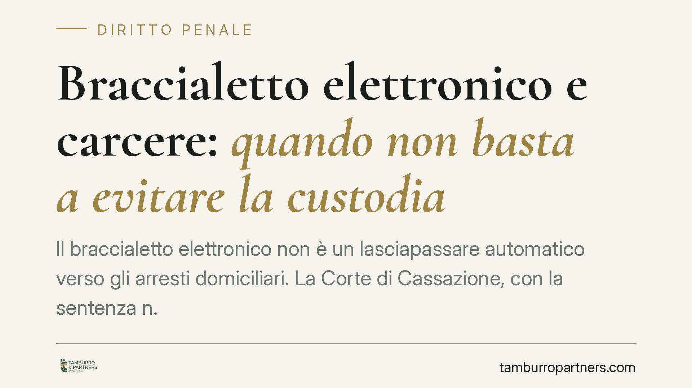

Braccialetto elettronico e carcere: quando non basta a evitare la custodia
Il braccialetto elettronico non è un lasciapassare automatico verso gli arresti domiciliari. La Corte di Cassazione, con la sentenza n. 18193/2026, ribadisce che quando la personalità dell'indagato rivela una persistente propensione alla violenza, il controllo elettronico non è sufficiente a contenere il rischio: serve una valutazione sostanziale, non formale, delle esigenze cautelari.

Il caso
Un indagato chiedeva la sostituzione della custodia in carcere con gli arresti domiciliari accompagnati dal braccialetto elettronico. A sostegno della richiesta venivano indicati il rispetto delle prescrizioni in precedenti misure e il tempo già trascorso in detenzione. Il tribunale del riesame negava la sostituzione. La Corte di Cassazione, con la sentenza n. 18193/2026, ha confermato quella decisione.
Il principio è netto: il braccialetto elettronico non compensa un profilo di pericolosità radicato. Il buon comportamento pregresso e il tempo di custodia sofferto non bastano, da soli, a superare una valutazione negativa sulla personalità dell'indagato.
Inquadramento normativo
La materia ruota attorno a tre disposizioni del codice di procedura penale.
L'art. 274 c.p.p. individua le esigenze cautelari. La lettera c) riguarda il pericolo di reiterazione del reato, valutato anche in base alla personalità dell'indagato e alle modalità del fatto. È qui che si colloca la propensione alla violenza richiamata dalla Cassazione.
L'art. 275 c.p.p. impone il principio di adeguatezza: la misura scelta deve essere proporzionata al rischio concreto. La custodia in carcere è extrema ratio, ma resta legittima quando misure meno afflittive non sono idonee a contenere il pericolo.
L'art. 275-bis c.p.p. disciplina il braccialetto elettronico. La norma prevede il controllo elettronico in fase di applicazione degli arresti domiciliari, come strumento per verificare il rispetto della prescrizione di non allontanarsi dal domicilio. Due precisazioni sono rilevanti. Primo: l'applicazione presuppone il consenso dell'imputato, che deve accettare l'installazione del dispositivo. Secondo: il braccialetto è uno strumento di verifica, non di contenimento fisico del soggetto. Segnala l'eventuale violazione, ma non la impedisce.
Su questa distinzione le Sezioni Unite si erano già pronunciate (Cass. SU n. 20769/2016), chiarendo che il dispositivo incide sulle modalità di controllo della misura domiciliare, non sulla natura o sull'intensità della misura stessa.
Perché la distinzione conta
Qui sta il nodo. Molti percepiscono il braccialetto come una garanzia: se il soggetto lo indossa, il rischio sarebbe neutralizzato. Non è così.
Il dispositivo consente di sapere in tempo reale se l'indagato lascia il domicilio. Non gli impedisce di farlo, né di commettere reati compatibili con la permanenza in casa. Se il pericolo che si vuole prevenire è la violenza contro una persona determinata, o la reiterazione di condotte aggressive, la sola tracciabilità dei movimenti può risultare inadeguata.
Da qui la conclusione della Corte: la valutazione deve essere sostanziale. Il giudice deve chiedersi se, in concreto, il controllo elettronico sia idoneo a contenere quel rischio, non se il soggetto abbia astrattamente rispettato prescrizioni in passato.
Implicazioni pratiche
Per chi affronta un procedimento cautelare, la sentenza ridimensiona un'aspettativa diffusa. Offrire la disponibilità al braccialetto non produce un esito scontato in favore degli arresti domiciliari.
La difesa non può limitarsi a proporre lo strumento tecnico. Deve costruire un quadro che dimostri l'attenuazione del pericolo di reiterazione: elementi sopravvenuti, mutamento delle condizioni personali, distanza dai fatti, assenza di segnali di persistente aggressività. È su questo terreno, e non sulla mera adozione del dispositivo, che si gioca la richiesta di misura meno afflittiva.
Cosa fare in concreto
- Non puntare solo sul dispositivo. Documentate ogni elemento che incida sul pericolo di reiterazione ex art. 274 lett. c) c.p.p.: la valutazione riguarda la personalità, non solo la modalità di controllo.
- Verificate il consenso. L'applicazione del braccialetto ex art. 275-bis c.p.p. presuppone l'accettazione dell'imputato: formalizzatela per tempo.
- Raccogliete elementi sopravvenuti. Percorsi di trattamento, cambiamenti nel contesto familiare o lavorativo, allontanamento dalla persona offesa: sono decisivi per attenuare la prognosi di pericolosità.
- Motivate l'adeguatezza. Spiegate perché, nel caso concreto, il controllo elettronico è idoneo a contenere il rischio residuo.
- Valutate i tempi. Il tempo trascorso in custodia rileva, ma non basta da solo: inseritelo in un quadro complessivo di attenuazione del pericolo.
Disclaimer
Contributo informativo a cura di Tamburro & Partners Avvocati. Non costituisce parere legale.
Ogni condominio ha una storia a sé.
Se gestisci un'amministrazione e vuoi un confronto su una specifica questione condominiale, scrivi allo studio. Ti rispondiamo entro un giorno lavorativo.